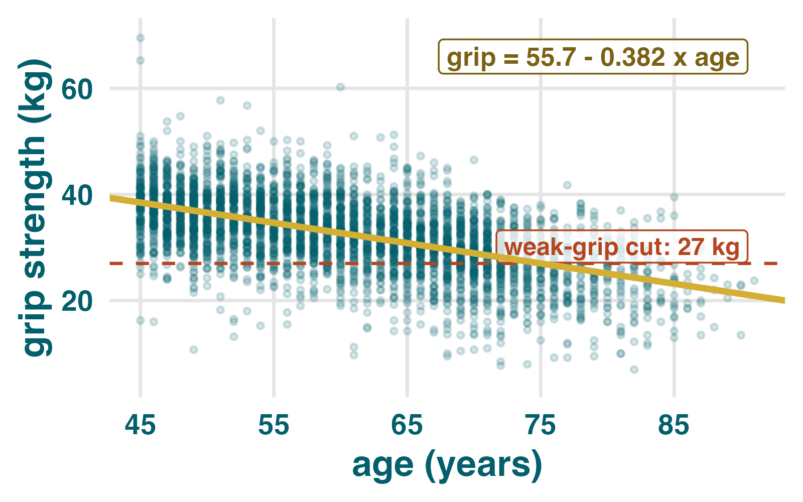
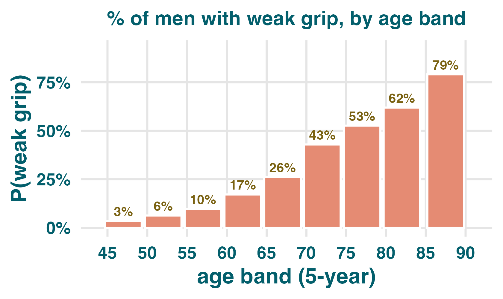
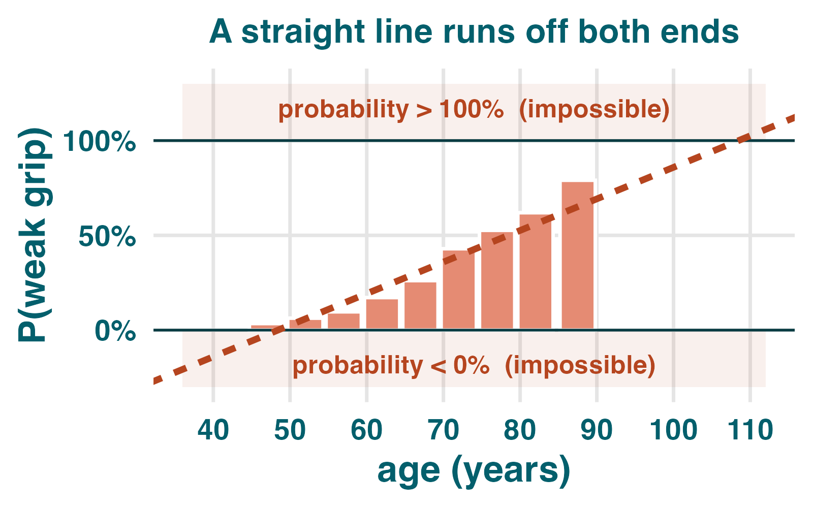
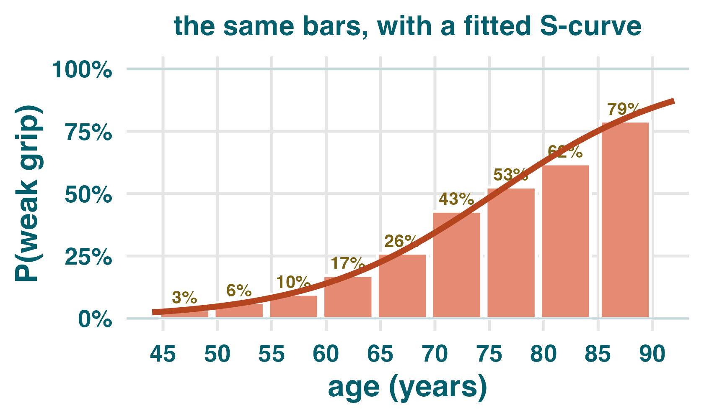
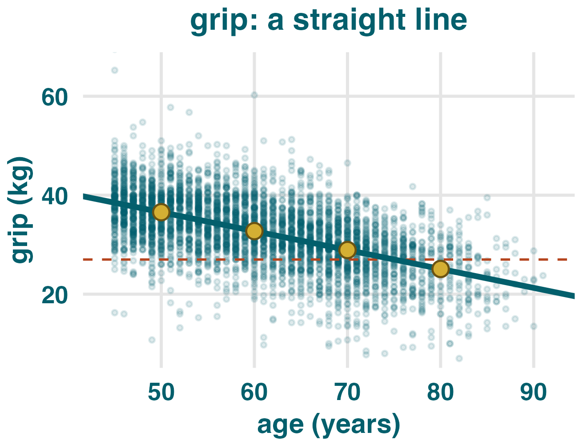
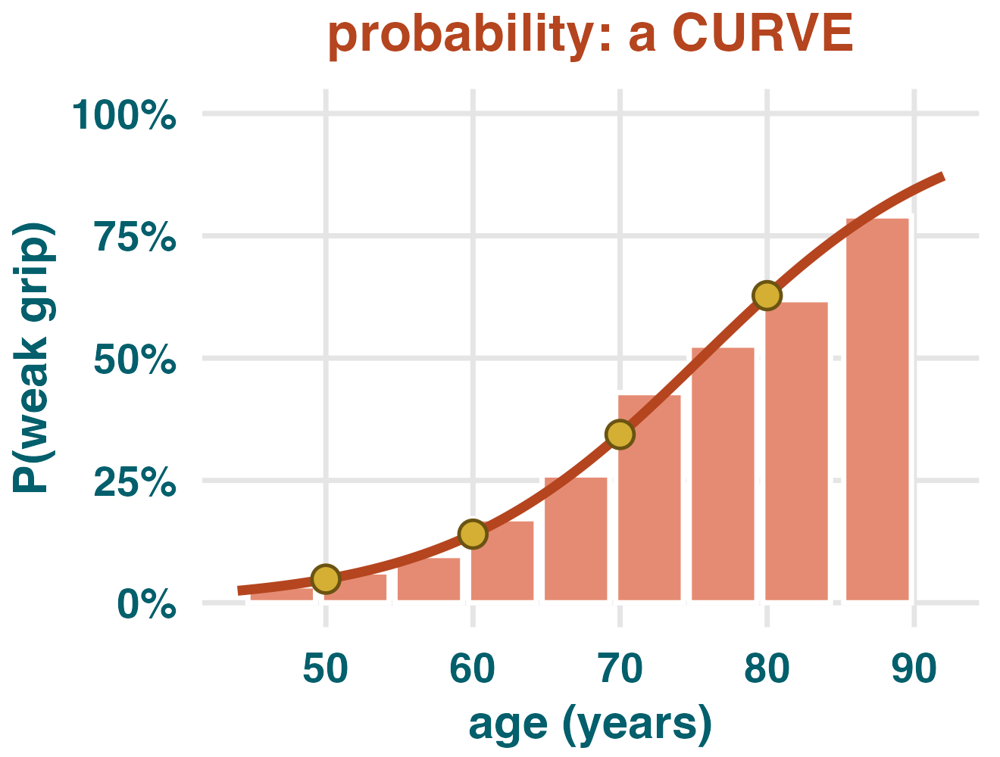
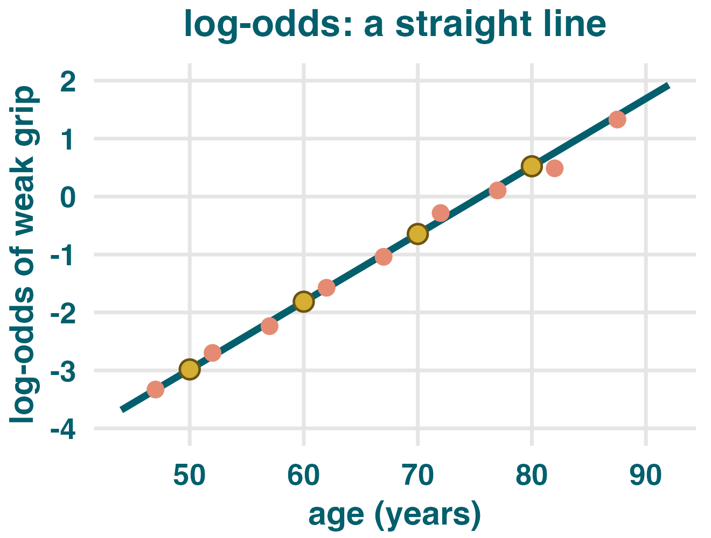
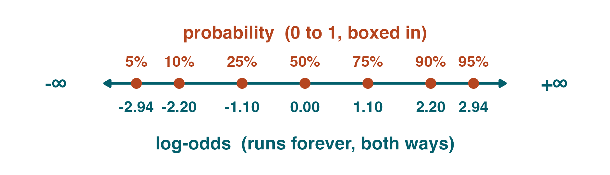
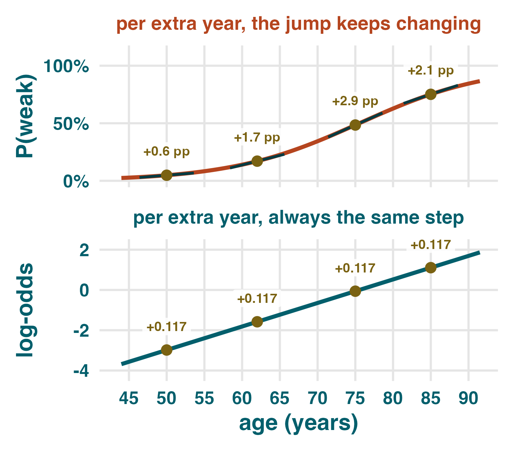

Intro to logistic regression: when the outcome is yes / no
lm(grip ~ age, data = klosa) |> summary()
#> Estimate Std. Error t value Pr(>|t|)
#> (Intercept) 55.68329 0.53304 104.46 <2e-16 ***
#> age -0.38241 0.00865 -44.21 <2e-16 ***

klosa <- klosa |>
mutate(weak_grip = as.integer(grip <= 27))
#> age grip weak_grip
#> 52 35.00 0
#> 71 26.00 1
#> 64 31.50 0
#> 67 21.25 1

Of the 647 men aged 65–69, 169 were weak. So P(weak) = 169 / 647 = 26%. Every bar is a probability between 0% and 100% — it cannot escape.

A straight line never stops. Follow it left and it predicts a negative probability; follow it right and it predicts a probability over 100%. But probability is trapped in [0, 1].

Here is the trick: this curve is a straight line in disguise.
One predictor, three scales — and only the middle one bends
lm(grip ~ age, data = klosa)
#> Estimate Std. Error t value
#> (Intercept) 55.68329 0.53304 104.46
#> age -0.38241 0.00865 -44.21

| age | fitted grip | step per decade |
|---|---|---|
| 50 | 36.6 kg | — |
| 60 | 32.7 kg | −3.82 |
| 70 | 28.9 kg | −3.82 |
| 80 | 25.1 kg | −3.82 |
The step is the same every decade. So a single slope describes the whole model. This is the thing we already know.
glm(weak_grip ~ age, family = binomial, data = klosa) #> Estimate Std. Error z value #> (Intercept) -8.82431 0.31925 -27.64 #> age 0.11683 0.00475 24.57

| age | fitted P(weak) | step per decade |
|---|---|---|
| 50 | 4.8% | — |
| 60 | 14.0% | +9.2 pp |
| 70 | 34.4% | +20.4 pp |
| 80 | 62.8% | +28.4 pp |
The step changes every decade. There is no single slope to report here — yet R printed one number, 0.117. So 0.117 is not living on this scale.
# the identical fit — nothing is refitted glm(weak_grip ~ age, family = binomial, data = klosa) #> (Intercept) -8.82431 <- same #> age 0.11683 <- same

| age | fitted log-odds | step per decade |
|---|---|---|
| 50 | −2.98 | — |
| 60 | −1.81 | +1.17 |
| 70 | −0.65 | +1.17 |
| 80 | +0.52 | +1.17 |
The step is the same every decade again — +1.17 per decade, i.e. +0.117 per year. This is the scale the 0.117 lives on, and the scale the model is linear on.
The translation: probability → odds → log-odds
$p = 169/647 = \color{#b5451f}{0.26}$
$\text{odds} = \dfrac{0.26}{1 - 0.26} = \dfrac{0.26}{0.74} = \color{#7a6212}{0.35}$
$\text{log-odds} = \ln(0.35) = \color{#035f6c}{-1.04}$

Probability is boxed into [0, 1] — that box is what a straight line kept crashing into. Log-odds is unbounded: it runs from $-\infty$ to $+\infty$. A straight line can roam freely there and never predict anything impossible. Squash it back with the S-curve and you land inside the box every time.
R does not take the log-odds of each man and run lm() — it can’t: an individual is 0 or 1, and $\ln(0/1)$ is $\pm\infty$. It fits by maximum likelihood instead. The straight line is the model’s structure; the dots just show that structure fits.
| age | log-odds +1.17 / decade |
odds ×3.22 / decade |
P(weak) no fixed step |
|---|---|---|---|
| 50 | −2.98 | 0.05 | 4.8% |
| 60 | −1.81 | 0.16 | 14.0% |
| 70 | −0.65 | 0.52 | 34.4% |
| 80 | +0.52 | 1.69 | 62.8% |
Read down each column. Log-odds adds the same amount. Odds multiplies by the same amount. Probability does neither — it is the only column with no rule of its own.

Each extra year of age raises the log-odds of weak grip by 0.117. Honest, exact — and meaningless to a clinician.
$e^{0.1168} = \color{#b5451f}{1.12}$ — each extra year multiplies the odds of weak grip by 1.12, i.e. 12% higher odds per year.
Over a decade: $e^{10 \times 0.1168} = \color{#b5451f}{3.22}$ — the odds triple.
No single number — you must name an age first. So we predict, and read the curve.
exp(coef(fit)) # odds ratios #> (Intercept) age #> 0.000147 1.12393 predict(fit, tibble(age = c(50, 60, 70, 80)), type = "response") # back to probability #> 1 2 3 4 #> 0.048 0.140 0.344 0.628
- A 0/1 outcome gives you probabilities, and probabilities are trapped in [0, 1].
- A straight line will not stay in that box, so we fit an S-curve.
- That S-curve is a straight line on the log-odds scale — which is why the output still shows an intercept and one slope.
- Exponentiate the slope to get an odds ratio; predict to get back to probability.
Practice: reading a logistic regression
- A — each extra BMI unit raises the probability of diabetes by 9 percentage points
- B — each extra BMI unit raises the log-odds of diabetes by 0.09, so the odds are multiplied by $e^{0.09} = 1.09$
- C — each extra BMI unit raises the odds of diabetes by 0.09
- A — you can, and it is always fine
- B — it will happily predict probabilities below 0 and above 1, which are not probabilities
glm(weak_grip ~ age, family = binomial,
data = klosa_women) |> summary()
#> Estimate Std. Error z value Pr(>|z|)
#> (Intercept) -8.41054 0.26159 -32.15 <2e-16 ***
#> age 0.11150 0.00387 28.78 <2e-16 ***
- What does 0.1115 mean, in words, on the log-odds scale?
- Turn it into an odds ratio per year. Then per decade.
- Is age significantly associated with weak grip?
- At what age does the model cross 50%?
1. Each extra year of age adds 0.1115 to the log-odds of weak grip — the same amount at every age.
2. $e^{0.1115} = \textbf{1.12}$ (12% higher odds per year); $e^{10 \times 0.1115} = \textbf{3.05}$ per decade.
3. Yes — $z = 28.8$, $p < .001$.
4. Log-odds $= 0$ when $\text{age} = 8.411 / 0.1115 = \textbf{75.4}$ years — almost identical to the men, once each sex is judged against its own cut.
“In our logistic model, age was associated with weak grip (β = 0.117). Each additional year of age therefore increased the probability of weak grip by 11.7%.”
The error: 0.117 is on the log-odds scale, not the probability scale — and no single number can give a per-year change in probability, because the curve’s slope keeps changing (+0.6 pp at 50, +2.9 pp at 75).
Fix A (odds): “Each additional year was associated with 12% higher odds of weak grip (OR = 1.12, 95% CI 1.11–1.13).” — the CI comes straight from exp(confint(fit)).
Fix B (probability, anchored): “Predicted probability of weak grip rose from 4.8% at age 50 to 34.4% at age 70.”
A logistic coefficient is never a change in probability. Exponentiate it and talk about odds, or predict and quote probabilities at named ages. Never both at once.